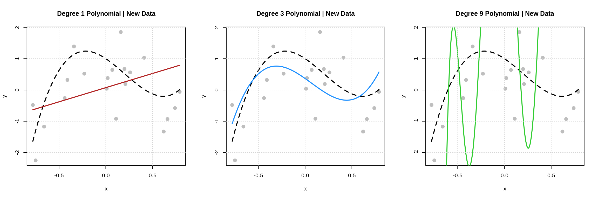
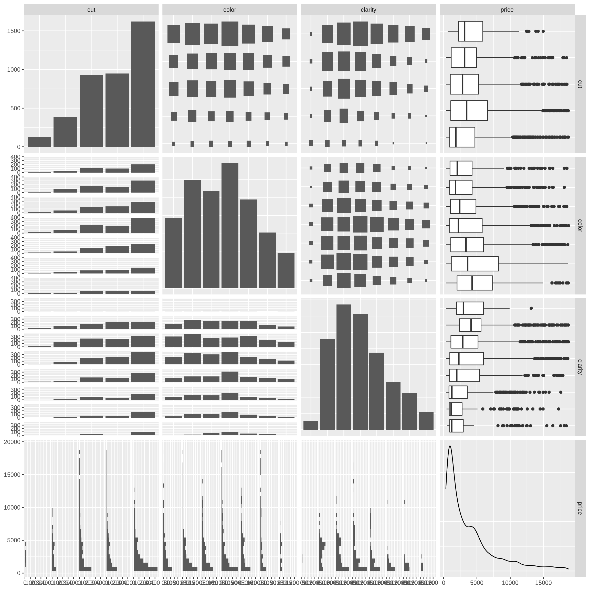

Chapter 2 Linear Regression
This chapter will discuss linear regression models, but for a very specific purpose: using linear regression models to make predictions.
Specifically, we will discuss:
- The regression function and estimating conditional means.
- Using the
lm()andpredict()functions in R. - Data splits to evaluate model performance for machine learning tasks.
2.1 Reading
- Required: ISL Chapter 3
- Skip section 3.6 which is dedicated to R.
- Consider this reading a review of previous regression knowledge. The information provided in this chapter of BSL will be the relevant material for STAT 432, but it is still worthwhile to read ISL. However note that this chapter of ISL overemphasizes inference, diagnostics, and at times hints too closely to causal claims for novice readers. (We’re not saying the authors are guilty of making the “correlation is not causation error,” instead, we’ve found that we need to be extremely clear about this issue with students in STAT 432.)
- Reference: STAT 420 @ UIUC: Notes
- In particular Chapter 10 which discusses model building will be relevant. The section on explanation versus prediction is extremely relevant, although note that it contains some differences in definitions, especially concerning test data. That said, the general ideas are important.
2.2 Explanation versus Prediction
Before we even begin to discuss regression, we make a bold announcement: STAT 432 is not a course about inference. It is very possible that there will be zero causal claims in this book. While it would certainly be nice (but extremely difficult) to uncover causal relationships, our focus will be on predictive relationships.
Suppose (although it is likely untrue) that there is a strong correlation between wearing a wrist watch, and car accidents. Depending on your frame of reference, you should view this information in very different ways.
- Suppose you are a car insurance company. This is great news! You can now more accurately predict the number of accidents of your policy holders if you know whether or not they wear a wrist watch. For the sake of understanding how much your company will need to pay out in a year, you don’t care what causes accidents, you just want to be able to predict (estimate) the number of accidents.
- Suppose you are a car driver. As a driver, you want to stay safe. That is, you want to do things that decrease accidents. In this framing, you care about things that cause accidents, not things that predict accidents. In other words, this correlation information should not lead to you throwing away your wrist watch.
Disclaimer: Extremely high correlation should not simply be ignored. For example, there is a very high correlation between smoking and lung cancer. (Fun fact: RA Fisher, the most famous statistician, did not believe that smoking caused cancer. It’s actually a part of a larger fasinating story.) However, this strong correlation is not proof that smoking causes lung cancer. Instead, additional study is needed to rule out confounders, establish mechanistic relationships, and more.
2.3 Setup
We now introduce the regression task. Regression is a subset of a broader machine learning tasks called supervised learning, which also include classification. (We will return later to discuss supervised learning in general after getting through some specifics of regression and classification.)
Stated simply, the regression tasks seeks to estimate (predict) a numeric quantity. For example:
- Estimating the salary of a baseball player.
- Estimating the price of a home for sale.
- Estimating the credit score of a bank customer,
- Estimating the number of downloads of a podcast.
Each of these quantities is some numeric value. The goal of regression is to estimate (predict) these quantities when they are unknown through the use of additional, possibly correlated quantities, for example the offensive and defensive statistics of a baseball player, or the location and attributes of a home.
2.4 Mathematical Setup
To get a better grasp of what regression is, we move to defining the task mathematically. Consider a random variable \(Y\) which represents a response (or outcome or target) variable, and \(p\) feature variables \(\boldsymbol{X} = (X_1, X_2, \ldots, X_p)\). Features are also called covariates or predictors. (We find the “predictors” nomenclature to be problematic when discussing prediction tasks.)
In the most common regression setup, we assume that the response variable \(Y\) is some function of the features, plus some random noise.
\[ Y = f(\boldsymbol{X}) + \epsilon \]
- We call \(f(\boldsymbol{X})\) the signal. This \(f\) is the function that we would like to learn.
- We call \(\epsilon\) the noise. We do not want to learn this which we risk if we overfit. (More on this later.)
So our goal will be to find some \(f\) such that \(f(\boldsymbol{X})\) is close to \(Y\). But how do we define close? There are many ways but we will start with, and most often consider, squared error loss. Specifically, we define a loss function,
\[ L(Y, f(\boldsymbol{X})) \triangleq \left(Y - f(\boldsymbol{X})\right) ^ 2 \]
Now we can clarify the goal of regression, which is to minimize the above loss, on average. We call this the risk of estimating \(Y\) using \(f(\boldsymbol{X})\).
\[ R(Y, f(\boldsymbol{X})) \triangleq \mathbb{E}[L(Y, f(\boldsymbol{X}))] = \mathbb{E}_{\boldsymbol{X}, Y}[(Y - f(\boldsymbol{X})) ^ 2] \]
Before attempting to minimize the risk, we first re-write the risk after conditioning on \(\boldsymbol{X}\).
\[ \mathbb{E}_{\boldsymbol{X}, Y} \left[ (Y - f(\boldsymbol{X})) ^ 2 \right] = \mathbb{E}_{\boldsymbol{X}} \mathbb{E}_{Y \mid \boldsymbol{X}} \left[ ( Y - f(\boldsymbol{X}) ) ^ 2 \mid \boldsymbol{X} = \boldsymbol{x} \right] \]
Minimizing the right-hand side is much easier, as it simply amounts to minimizing the inner expectation with respect to \(Y \mid \boldsymbol{X}\), essentially minimizing the risk pointwise, for each \(\boldsymbol{x}\).
It turns out, that the risk is minimized by the conditional mean of \(Y\) given \(\boldsymbol{X}\),
\[ \mu(\boldsymbol{x}) \triangleq \mathbb{E}[Y \mid \boldsymbol{X} = \boldsymbol{x}] \]
which we call the regression function. (This is not a learned function, this is the function we would like to learn in order to minimize the squared error loss on average. \(f\) is any function, \(\mu\) is the function that would minimize squared error loss on average if we knew if, but will instead need to learn it form the data.
Note that \(\boldsymbol{x}\) represents (potential) realized values of the random variables \(\boldsymbol{X}\).
\[ \boldsymbol{x} = (x_1, x_2, \ldots, x_p) \]
We can now state the goal of the regression task: we want to estimate the regression function. How do we do that?
2.5 Linear Regression Models
What do linear regression models do? They estimate the conditional mean of \(Y\) given \(\boldsymbol{X}\)! (How convenient.)
Consider the following probability model
\[ Y = 1 - 2x - 3x ^ 2 + 5x ^ 3 + \epsilon \]
where \(\epsilon \sim \text{N}(0, \sigma^2)\).
Alternatively we could write
\[ Y \mid X \sim \text{N}(1 - 2x - 3x ^ 2 + 5x ^ 3, \sigma^2) \]
This perhaps makes it clearer that
\[ \mu(x) = \mathbb{E}[Y \mid \boldsymbol{X} = \boldsymbol{x}] = 1 - 2x - 3x ^ 2 + 5x ^ 3 \]
What do linear models do? More specifically than before, linear regression models estimate the conditional mean of \(Y\) given \(\boldsymbol{X}\) by assuming this conditional mean is a linear combination of the feature variables.
Suppose for a moment that we did not know the above true probability model, or even the more specifically the regression function. Instead, all we had was some data, \((x_i, y_i)\) for \(i = 1, 2, \ldots, n\).
| x | y |
|---|---|
| -0.47 | -0.06 |
| -0.26 | 1.72 |
| 0.15 | 1.39 |
| 0.82 | 0.68 |
| -0.60 | -0.27 |
| 0.80 | 1.55 |
| 0.89 | 0.76 |
| 0.32 | -0.40 |
| 0.26 | -1.85 |
| -0.88 | -1.85 |
How do we fit (or “train” in ML language) a linear model with this data? In order words, how to be learn the regression function from this data with a linear regression model?
First, we need to make assumptions about the form of the regression function, up to, but not including some unknown parameters. Consider three possible linear models, in particular, three possible regression functions.
Degree 1 Polynomial
\[ \mu(x) = \beta_0 + \beta_1 x \]
Degree 3 Polynomial
\[ \mu(x) = \beta_0 + \beta_1 x + \beta_2 x^2 + \beta_3 x^3 \]
Degree 9 Polynomial
\[ \mu(x) = \beta_0 + \beta_1 x + \beta_2 x^2 + \beta_3 x^3 + \ldots + \beta_9 x^9 \]
These are chosen mostly arbitrarily for illustrative purposes which we’ll see in a moment.
So how do we actually fit these models, that is train them, with the given data. We have a couple of options: Maximum Likelihood or Least Squares! In this case, they actually produce the same result, so we use least squares for simplicity of explanation.
To fit the degree 3 polynomial using least squares, we minimize
\[ \sum_{i = 1}^{n}\left(y_i - (\beta_0 + \beta_1 x_i + \beta_2 x_i^2 + \beta_3 x_i^3)\right) ^ 2 \]
Skipping the details of the minimization, we would acquire \(\hat{\beta}_0\), \(\hat{\beta}_1\), \(\hat{\beta}_2\), and \(\hat{\beta}_3\) which are estimates of \({\beta}_0\), \({\beta}_1\), \({\beta}_2\), and \({\beta}_3\).
Taken together, we would have
\[ \hat{\mu}(x) = \hat{\beta}_0 + \hat{\beta}_1 x_1 + \hat{\beta}_2 x_2^2 + \hat{\beta}_3 x_3^3 \]
which is then an estimate of \(\mu(x)\).
While in this case, it will almost certainly not be the case that \(\hat{\beta}_0 = 1\) or \(\hat{\beta}_1 = -2\) or \(\hat{\beta}_2 = -3\) or \(\hat{\beta}_3 = 5\), which are the true values of the \(\beta\) coefficients, they are at least reasonable estimates.
As a bit of an aside, note that in this case, it is sort of ambiguous as to whether there is one feature, \(x\), which is seen in the data, or three features \(x\), \(x^2\), and \(x^3\), which are seen in the model. The truth is sort of in the middle. The data has a single feature, but through feature engineering, we have created two additional features for fitting the model. Note that when using R, you do not need to modify the data to do this, instead you should use R’s formula syntax to specify this feature engineering when fitting the model. More on this when we discuss the lm() function in R. (We introduce this somewhat confusing notion early so we can emphasize that linear models are about linear combinations of features, not necessarily linear relationships. Although, linear models are very good at learning linear relationships.)
Suppose instead we had assumed that
\[ \mu(x) = \beta_0 + \beta_1 x \]
This model is obviously flawed as it doesn’t contain enough terms to capture the true regression function. (Later we will say this model is not “flexible” enough.)
Or, suppose we had assumed
\[ \mu(x) = \beta_0 + \beta_1 x + \beta_2 x^2 + \beta_3 x^3 + \ldots + \beta_9 x^9 \]
This model is also flawed, but for a different reason. (Later we will say this model is too “flexible.”) After using least squares, we will obtain some \(\hat{\beta}_9\) even though there is not a 9th degree term in the true regression function!
Let’s take a look at this visually.

Here we see the three models fit to the data above. The dashed black curve is the true mean function, that is the true mean of \(Y\) given \(x\), and the solid colored curves are the estimated mean functions.
Now we ask the question: which of these models is best? Given these pictures, there are two criteria that we could consider.
- How close is the estimated regression (mean) function to the data? (Degree 9 is best! There is no error!)
- How close is the estimated regression (mean) function to the true regression (mean) function? (Degree 3 is best.)
From the presentation here, it’s probably clear that the latter is actually what matters. We can demonstrate this by generating some “new” data.

These plots match the plots above, except newly simulated data is shown. (The regression functions were still estimated with the previous data.) Note that the degree 3 polynomial matches the data about the same as before. The degree 9 polynomial now correctly predicts none of the new data and makes some huge errors.
We will define these concepts more generally later, but for now we note that:
- The Degree 9 Polynomial is overfitting. It performs well on the data used to fit the model, but poorly on new data.
- The Degree 1 Polynomial is underfitting. It performs poorly on the data used to fit the model and poorly on new data.
There’s a bit of a problem though! In practice, we don’t know the true mean function, and we don’t have the magical ability to simulate new data! Yikes! After we discuss a bit about how to fit these models in R, we’ll return to this issue. (Spoiler: Don’t fit the model to all the available data. Pretend the data you didn’t use is “new” when you evaluate models.)
2.6 Using lm()
Before we continue, let’s consider a different data generating process. We first define this data generating process as an R function.
gen_mlr_data = function(sample_size = 250) {
x1 = round(runif(n = sample_size), 2)
x2 = round(runif(n = sample_size), 2)
x3 = round(runif(n = sample_size), 2)
x4 = factor(sample(c("A", "B", "C"), size = sample_size, replace = TRUE))
x5 = round(runif(n = sample_size), 2)
x6 = round(runif(n = sample_size), 2)
y = 2 + x1 + sin(x2) + 3 * x3 ^ 2 +
3 * (x4 == "B") - 2 * (x4 == "C") +
rnorm(n = sample_size, mean = 0, sd = 0.5)
tibble(y, x1, x2, x3, x4, x5, x6)
}We then run the function and store the data that is returned.
We then inspect the data.
## # A tibble: 6 x 7
## y x1 x2 x3 x4 x5 x6
## <dbl> <dbl> <dbl> <dbl> <fct> <dbl> <dbl>
## 1 2.85 0.91 0.33 0.14 A 0.53 0.24
## 2 6.22 0.94 0.19 0.18 B 0.7 0.51
## 3 6.71 0.290 0.27 0.52 B 0.05 0.51
## 4 7.84 0.83 0.53 0.81 B 0.92 0.76
## 5 2.75 0.64 0.02 0.12 A 0.03 0.27
## 6 4.60 0.52 0.8 0.89 A 0.78 0.69Note that we see only numeric (dbl or int) and factor (fctr) variables. For now, we will require that data contains only these types, and in particular, we will coerce any categorical variables to be factors. (More on this later.)
Mathematically, this data was generated from the probability model
\[ Y \mid \boldsymbol{X} \sim \text{N}(2 + 1\cdot x_1 + 1 \cdot \sin(x_2) + 3 \cdot x_3^3 + 3 \cdot x_{4B} -2 \cdot x_{4C}, \sigma^2 = 0.25) \]
where
- \(x_{4B}\) is a dummy variable which takes the value 1 when \(x_4 = \text{B}\) and 0 otherwise
- \(x_{4C}\) is a dummy variable which takes the value 1 when \(x_4 = \text{C}\) and 0 otherwise
In particular, the true mean function is
\[ \mu(\boldsymbol{x}) = 2 + 1\cdot x_1 + 1 \cdot \sin(x_2) + 3 \cdot x_3^3 + 3 \cdot x_{4B} -2 \cdot x_{4C} \]
Now, finally, let’s fit some models it R to this data! To do so, we will use one of the most important functions in R, the lm() function.
Let’s specify the form of some assumed mean functions of models that we would like to fit.
Model 1 or mod_1 in R
\[ \mu_1(\boldsymbol{x}) = \beta_0 + \beta_1 x_1 \]
Model 2 or mod_2 in R
\[ \mu_2(\boldsymbol{x}) = \beta_0 + \beta_1 x_1 + \beta_2 x_2 \]
Model 3 or mod_3 in R
\[ \mu_3(\boldsymbol{x}) = \beta_0 + \beta_1 x_1 + \beta_2 x_2 + \beta_3 x_3 + \beta_{4B} x_{4B} +\beta_{4C} x_{4C} + \beta_5 x_5 + \beta_6 x_6 \]
Model 4 or mod_4 in R
\[ \mu_4(\boldsymbol{x}) = \beta_0 + \beta_1 x_1 + \beta_2 \sin(x_2) + \beta_3 x_3^3 + \beta_{4B} x_{4B} + \beta_{4C} x_{4C} \]
Now, finally, R!
## (Intercept) x1
## 3.7834423 0.9530758Nothing too interesting here about fitting Model 1. We see that the coef() function returns estimate of the \(\beta_0\) and \(\beta_1\) parameters defined above.
## (Intercept) x1 x2
## 3.8747999 0.9400654 -0.1802538Again, Model 2 isn’t too interesting. We see that the coef() function returns estimate of the \(\beta_0\), \(\beta_1\), and \(\beta_2\) parameters defined above.
## (Intercept) x1 x2 x3 x4B x4C
## 1.71015079 0.76017877 0.77637360 3.00479841 3.06812204 -1.93068734
## x5 x6
## -0.12248770 -0.04797294Now, Model 3, we see a couple interesting things. First, the formula syntax y ~ . fits a model with y as the response, and all other variables in the sim_mlr_data data frame (tibble) as features.
Also note: we did not manually create the needed dummy variables! R did this for us!
## [1] "A" "B" "C"Because x4 is a factor variable, R uses the first level, A, as the reference level, and then creates dummy variables for the remaining levels. Cool!
## (Intercept) x1 I(sin(x2)) I(x3^3) x4B x4C
## 2.3435702 0.8176247 0.9159963 3.0446314 3.0369950 -1.9421931Our last model, mod_4 is the most interesting. It makes use of the inhibit function, I(). This allows for on-the-fly feature engineering based on available features. We’re creating new features via R’s formula syntax as we fit the model.
To see why this is necessary, consider the following:
##
## Call:
## lm(formula = y ~ (x1 + x2)^2, data = sim_mlr_data)
##
## Coefficients:
## (Intercept) x1 x2 x1:x2
## 4.1800 0.3353 -0.8259 1.3130This created an interaction term! That means the ^ operator has different uses depending on the context. In specifying a formula, it has a particular use, in this case specifying an interaction term, and all lower order terms. However, inside of I() it will be used for exponentiation. For details, use ?I and ?formula. These are complex R topics, but it will help to start to learn them. For some additional reading on R’s formula syntax, the following two blog posts by Max Kuhn are good reads:
For the first half of this book, we will always keep the data mostly untouched, and rely heavily on the use of R’s formula syntax.
If you are ever interested in what’s happening under the hood when you use the formula syntax, and you recall the linear algebra necessary to perform linear regression, the model.matrix() function will be useful.
## (Intercept) x1 I(sin(x2)) I(x3^3) x4B x4C
## 1 1 0.91 0.32404303 0.002744 0 0
## 2 1 0.94 0.18885889 0.005832 1 0
## 3 1 0.29 0.26673144 0.140608 1 0
## 4 1 0.83 0.50553334 0.531441 1 0
## 5 1 0.64 0.01999867 0.001728 0 0
## 6 1 0.52 0.71735609 0.704969 0 0Back to talking about mod_4. Recall that we had assumed that
\[ \mu_4(\boldsymbol{x}) = \beta_0 + \beta_1 x_1 + \beta_2 \sin(x_2) + \beta_3 x_3^3 + \beta_{4B} x_{4B} + \beta_{4C} x_{4C} \]
Also recall that the true mean function is
\[ \mu(\boldsymbol{x}) = 2 + 1\cdot x_1 + 1 \cdot \sin(x_2) + 3 \cdot x_3^3 + 3 \cdot x_{4B} -2 \cdot x_{4C} \]
Because we know this, we can investigate how well our model is performing. We know the true values of the parameters, in this case
- \(\beta_0 = 2\)
- \(\beta_1 = 1\)
- \(\beta_2 = 1\)
- \(\beta_3 = 3\)
- \(\beta_{4B} = 3\)
- \(\beta_{4C} = -2\)
- \(\beta_5 = 0\) (\(x_5\) is not used in the true mean function.)
- \(\beta_6 = 0\) (\(x_6\) is not used in the true mean function.)
We also have the estimated coefficients from mod_4.
## (Intercept) x1 I(sin(x2)) I(x3^3) x4B x4C
## 2.3435702 0.8176247 0.9159963 3.0446314 3.0369950 -1.9421931- \(\hat{\beta}_0 = 2.34\)
- \(\hat{\beta}_1 = 0.82\)
- \(\hat{\beta}_2 = 0.92\)
- \(\hat{\beta}_3 = 3.04\)
- \(\hat{\beta}_{4B} = 3.04\)
- \(\hat{\beta}_{4C} = -1.94\)
- \(\hat{\beta}_5 = 0\) (We assumed \(x_5\) is not used in the true mean function.)
- \(\hat{\beta}_6 = 0\) (We assumed \(x_6\) is not used in the true mean function.)
Our estimated regression (mean) function is then
\[ \hat{\mu}_4(\boldsymbol{x}) = \hat{\beta}_0 + \hat{\beta}_1 x_1 + \hat{\beta}_2 \sin(x_2) + \hat{\beta}_3 x_3^3 + \hat{\beta}_{4B} x_{4B} + \hat{\beta}_{4C} x_{4C} \]
Perfect? No. Pretty good? Maybe. However, in reality, this is not a check that we can perform! We still need an evaluation strategy that doesn’t depend on knowing the true model!
Note that the other models are “bad” in this case because they are either missing features (mod_1 and mod_2) or the are both missing features and contain unnecessary features (mod_3).
2.7 The predict() Function
We stated previously that fitting a linear regression model means that we are learning the regression (mean) function. Now that we fit and stored some models, how do we access these estimated regression (mean) functions? The predict() function!
The predict() function will be the workhorse of STAT 432. Let’s see how to use it with models fit using the lm() function.
## # A tibble: 1 x 7
## y x1 x2 x3 x4 x5 x6
## <dbl> <dbl> <dbl> <dbl> <fct> <dbl> <dbl>
## 1 0.751 0.17 0.81 0.38 C 0.6 0.6Suppose we wanted to estimate the mean of \(Y\) when
- \(x_1 = 0.17\)
- \(x_2 = 0.81\)
- \(x_3 = 0.38\)
- \(x_4 = \text{C}\)
- \(x_5 = 0.38\)
- \(x_6 = 0.38\)
In other words, we want to estimate
\[ \mathbb{E}[Y \mid \boldsymbol{X} = \texttt{new_obs}] = \mathbb{E}[Y \mid X_1 = 0.17, X_2 = 0.81, X_3 = 0.38, X_4 = \text{C}, X_5 = 0.6, X_6 = 0.6] \]
The predict() function to the rescue!
## 1
## 3.945465What’s being returned here?
\[ \hat{\mu}_1(\texttt{new_obs}) = \hat{\mathbb{E}}[Y \mid \boldsymbol{X} = \texttt{new_obs}] = 3.9454652 \]
The predict function, together with a trained model, is the estimated regression (mean) function! Supply a different trained model, then you get that estimated regression (mean) function.
## 1
## 1.370883What’s being returned here?
\[ \hat{\mu}_4(\texttt{new_obs}) = \hat{\mathbb{E}}[Y \mid \boldsymbol{X} = \texttt{new_obs}] = 1.3708827 \]
We could compare these two estimates of the conditional mean of \(Y\) to the true value of y observed in the observation. More on that in the next section.
If given an entire dataset, instead of a single observation, predict() returns the estimated conditional mean of each observation.
## 1 2 3 4 5 6 7 8
## 7.8896349 5.4061018 1.3788387 0.8560024 6.6246872 8.2203544 3.2140060 3.5738889
## 9 10
## 5.9928135 8.4908895Neat!
A warning: Do not name the second argument to the predict function. This will cause issues because sometimes the name of that argument is newdata, as it is here, but sometimes it is data. If you use the wrong name, bad things will happen. It is safer to simply never name this argument. (However, in general, arguments after the first should be named. The predict() function is the exception.)
2.8 Data Splitting
(Note: Many readers will have possibly seen some machine learning previously. For now, please pretend that you have never heard of or seen cross-validation. Cross-validation will clutter the initial introduction of many concepts. We will return to and formalize it later.)
OK. So now we can fit models, and make predictions (create estimates of the conditional mean of \(Y\) given values of the features), how do we evaluate how well our models perform, without knowing the true model!
First, let’s state a somewhat specific goal. We would like to train models that generalize well, that is, perform well on “new” or “unseen” data that was not used to train the model.
To accomplish this goal, we’ll just “create” a dataset that isn’t used to train the model! To create it, we will just split it off. (We’ll actually do so twice.)
First, denote the entire available data as \(\mathcal{D}\).
\[ \mathcal{D} = \{ (x_i, y_i) \in \mathbb{R}^p \times \mathbb{R}, \ i = 1, 2, \ldots n \} \]
We first split this data into a train and test set. We will discuss these two dataset ad nauseam, but let’s set two rules right now.
- You can do whatever you would like with the training data.
- However, it is best used to train, evaluate, and select models.
- Do not, ever, for any reason, fit a model using test data!
- Additionally, you should not select models using test data.
- In STAT 432, we will only use test data to provide a final estimate of the generalization error of a chosen model. (Much more on this along the way.)
Again, do not, ever, for any reason, fit a model using test data! I repeat: Do not, ever, for any reason, fit a model using test data! (You’ve been warned.)
To perform this split, we will randomly select some observations for the train (trn) set, the remainder will be used for the test (tst) set.
\[ \mathcal{D} = \mathcal{D}_{\texttt{trn}} \cup \mathcal{D}_{\texttt{tst}} \]
As a general guiding heuristic, use 80% of the data for training, 20% for testing.
In addition to the train-test split, we will further split the train data into estimation and validation sets. These are somewhat confusing terms, developed for STAT 432, but hear us out.
To perform this split, we will randomly select some observations (from the train set) for the estimation (est) set, the remainder will be used for the validation (val) set.
\[ \mathcal{D}_{\texttt{trn}} = \mathcal{D}_{\texttt{est}} \cup \mathcal{D}_{\texttt{val}} \]
Again, use 80% of the data for estimation, 20% for validation.
The need for this second split might not become super clear until later on, but the general idea is this:
- Fit a bunch of candidate models to the estimation data. (Think of this as the data to estimate the model parameters. That’s how we chose the name.)
- Using these candidate models, evaluate how well they perform using the validation data.
- After evaluating and picking a single model, re-fit this model to the entire training dataset.
- Provide an estimate of how well this model performs using the test data.
Now that we have data for estimation, and validation, we need some metrics for evaluating these models.
2.9 Regression Metrics
If our goal is to “predict” then we want small errors. In general there are two types of errors we consider:
- Squared Errors: \((y_i - \hat{\mu}(\boldsymbol{x}_i)) ^2\)
- Absolute Errors: \(|y_i - \hat{\mu}(\boldsymbol{x}_i)|\)
In both cases, we will want to consider the average errors made. We define two metrics.
Root Mean Square Error (RMSE)
\[ \text{rmse}\left(\hat{f}_{\texttt{set_f}}, \mathcal{D}_{\texttt{set_D}} \right) = \sqrt{\frac{1}{n_{\texttt{set_D}}}\displaystyle\sum_{i \in {\texttt{set_D}}}^{}\left(y_i - \hat{f}_{\texttt{set_f}}({x}_i)\right)^2} \]
Mean Absolute Error (MAE)
\[ \text{mae}\left(\hat{f}_{\texttt{set_f}}, \mathcal{D}_{\texttt{set_D}} \right) = \frac{1}{n_{\texttt{set_D}}}\displaystyle\sum_{i \in {\texttt{set_D}}}^{}\left|y_i - \hat{f}_{\texttt{set_f}}({x}_i)\right| \]
- \(\hat{f}_{\texttt{set_f}}\) is a function \(f\) estimated using a model fit to some dataset \(\texttt{set_f}\).
- The \((x_i, y_i)\) are data from dataset \(\mathcal{D}_{\texttt{set_D}}\).
For both, smaller is better. (Less error on average.) In both, we note both the data that the model was fit to, as well as the data the model is evaluated on.
Depending on the data used for these different sets, we “define” different metrics. For example, for RMSE, we have:
Train RMSE: Evaluate a model fit to estimation data, using estimation data.
\[ \text{RMSE}_{\texttt{trn}} = \text{rmse}\left(\hat{f}_{\texttt{est}}, \mathcal{D}_{\texttt{est}}\right) = \sqrt{\frac{1}{n_{\texttt{est}}}\displaystyle\sum_{i \in {\texttt{est}}}^{}\left(y_i - \hat{f}_{\texttt{est}}({x}_i)\right)^2} \]
Validation RMSE: Evaluate a model fit to estimation data, using validation data.
\[ \text{RMSE}_{\texttt{val}} = \text{rmse}\left(\hat{f}_{\texttt{est}}, \mathcal{D}_{\texttt{val}}\right) = \sqrt{\frac{1}{n_{\texttt{val}}}\displaystyle\sum_{i \in {\texttt{val}}}^{}\left(y_i - \hat{f}_{\texttt{est}}({x}_i)\right)^2} \]
Test RMSE: Evaluate a model fit to training data, using test data.
\[ \text{RMSE}_{\texttt{tst}} = \text{rmse}\left(\hat{f}_{\texttt{trn}}, \mathcal{D}_{\texttt{tst}}\right) = \sqrt{\frac{1}{n_{\texttt{tst}}}\displaystyle\sum_{i \in {\texttt{tst}}}^{}\left(y_i - \hat{f}_{\texttt{trn}}({x}_i)\right)^2} \]
For the rest of this chapter, we will largely ignore train error. It’s a bit confusing, since it doesn’t use the full training data! However, think of training error this way: training error evaluates how well a model performs on the data used to fit the model. (This is the general concept behind “training error.” Others might simply call the “estimation” set the training set. We use “estimation” so that we can reserve “train” for the full training dataset, not just the subset use to initially fit the model.)
Let’s return to the sim_mlr_data data and apply these splits and metrics to this data.
# test-train split
mlr_trn_idx = sample(nrow(sim_mlr_data), size = 0.8 * nrow(sim_mlr_data))
mlr_trn = sim_mlr_data[mlr_trn_idx, ]
mlr_tst = sim_mlr_data[-mlr_trn_idx, ]Here we randomly select 80% of the rows of the full data, and store these indices as mlr_trn_idx. We then create the mlr_trn and mlr_tst datasets by either selecting or anti-selecting these rows from the original dataset.
# estimation-validation split
mlr_est_idx = sample(nrow(mlr_trn), size = 0.8 * nrow(mlr_trn))
mlr_est = mlr_trn[mlr_est_idx, ]
mlr_val = mlr_trn[-mlr_est_idx, ]We then repeat the process from above within the train data.
Now, let’s compare mod_3 and mod_4. To do so, we first fit both models to the estimation data.
mod_3_est = lm(y ~ ., data = mlr_est)
mod_4_est = lm(y ~ x1 + I(sin(x2)) + I(x3 ^ 3) + x4, data = mlr_est)We then calculate the validation error for both. Because we will do it so often, we go ahead and write a function to calculate RMSE, given vectors of the actual values (from the data used to evaluate) and the predictions from the model.
# calculate validation RMSE, model 3
calc_rmse(actual = mlr_val$y,
predicted = predict(mod_3_est, mlr_val))## [1] 0.5788282# calculate validation RMSE, model 4
calc_rmse(actual = mlr_val$y,
predicted = predict(mod_4_est, mlr_val))## [1] 0.5452852Here we see that mod_4_est achieves a lower validation error, so we move forward with this model. We then refit to the full train data, then evaluate on test.
# calculate test RMSE, model 4
calc_rmse(actual = mlr_tst$y,
predicted = predict(mod_4_trn, mlr_tst))## [1] 0.538057We ignore the validation metrics. (We already used them for selecting a model.) This test RMSE is our estimate of how well our selected model will perform on unseen data, on average (in a squared error sense).
Note that for selecting a model there is no difference between MSE and RMSE, but for the sake of understanding, RMSE has preferential units, the same units as the response variables. (Whereas MSE has units squared.) We will always report RMSE.
2.9.1 Graphical Evaluation
In addition to numeric evaluations, we can evaluate a regression model graphically, in particular with a predicted versus actual plot.
plot(
x = mlr_tst$y,
y = predict(mod_4_trn, mlr_tst),
pch = 20, col = "darkgrey",
xlim = c(-1, 10), ylim = c(-1, 10),
main = "Predicted vs Actual, Model 4, Test Data",
xlab = "Actual",
ylab = "Predicted"
)
abline(a = 0, b = 1, lwd = 2)
grid()
The closer to the line the better. Also, the less of a pattern the better. In other words, this plot will help diagnose if our model is making similar sized errors for all predictions, or if there are systematic differences. It can also help identify large errors. Sometimes, errors can be on average small, but include some huge errors. In some settings, this may be extremely undiserable.
This might get you thinking about “checking the assumptions” of a linear model. Assessing things like: normality, constant variance, etc. Note that while these are nice things to have, we aren’t really concerned with these things. If we care how well our model predicts, then we will directly evaluate how well it predicts. Least squares is least squares. It minimizes errors. It doesn’t care about model assumptions.
2.10 Example: “Simple” Simulated Data
Let’s return to our initial dataset with a single feature \(x\). This time we’ll generate more data, and then split it.
gen_slr_data = function(sample_size = 100, mu) {
x = runif(n = sample_size, min = -1, max = 1)
y = mu(x) + rnorm(n = sample_size)
tibble(x, y)
}# test-train split
slr_trn_idx = sample(nrow(sim_slr_data), size = 0.8 * nrow(sim_slr_data))
slr_trn = sim_slr_data[slr_trn_idx, ]
slr_tst = sim_slr_data[-slr_trn_idx, ]# estimation-validation split
slr_est_idx = sample(nrow(slr_trn), size = 0.8 * nrow(slr_trn))
slr_est = slr_trn[slr_est_idx, ]
slr_val = slr_trn[-slr_est_idx, ]## # A tibble: 10 x 2
## x y
## <dbl> <dbl>
## 1 0.573 -1.18
## 2 0.807 0.576
## 3 0.272 -0.973
## 4 -0.813 -1.78
## 5 -0.161 0.833
## 6 0.736 1.07
## 7 -0.242 2.97
## 8 0.520 -1.64
## 9 -0.664 0.269
## 10 -0.777 -2.02This time let’s evaluate nine different models. Polynomial models from degree 1 to 9. We fit each model to the estimation data, and store the results in a list.
poly_mod_est_list = list(
poly_mod_1_est = lm(y ~ poly(x, degree = 1), data = slr_est),
poly_mod_2_est = lm(y ~ poly(x, degree = 2), data = slr_est),
poly_mod_3_est = lm(y ~ poly(x, degree = 3), data = slr_est),
poly_mod_4_est = lm(y ~ poly(x, degree = 4), data = slr_est),
poly_mod_5_est = lm(y ~ poly(x, degree = 5), data = slr_est),
poly_mod_6_est = lm(y ~ poly(x, degree = 6), data = slr_est),
poly_mod_7_est = lm(y ~ poly(x, degree = 7), data = slr_est),
poly_mod_8_est = lm(y ~ poly(x, degree = 8), data = slr_est),
poly_mod_9_est = lm(y ~ poly(x, degree = 9), data = slr_est)
)So, for example, to access the third model, we would use
##
## Call:
## lm(formula = y ~ poly(x, degree = 3), data = slr_est)
##
## Coefficients:
## (Intercept) poly(x, degree = 3)1 poly(x, degree = 3)2
## -0.2058 5.3030 -7.4306
## poly(x, degree = 3)3
## 6.7638But let’s back up. That code was terrible to write. Too much repeated code. Consider the following code
This accomplishes the same task, but is much cleaner!
##
## Call:
## lm(formula = y ~ poly(x, degree = .x), data = slr_est)
##
## Coefficients:
## (Intercept) poly(x, degree = .x)1 poly(x, degree = .x)2
## -0.2058 5.3030 -7.4306
## poly(x, degree = .x)3
## 6.7638Here we are using the map() function from the purrr package. The ~ here is used to create a function in place. We’ll consider another way to make it a bit clearer, that is, without writing the function within map().
Again, the same thing.
##
## Call:
## lm(formula = y ~ poly(x, degree = d), data = slr_est)
##
## Coefficients:
## (Intercept) poly(x, degree = d)1 poly(x, degree = d)2
## -0.2058 5.3030 -7.4306
## poly(x, degree = d)3
## 6.7638We’ll continue to use this map() function throughout. We’ll explain more and more as we go. Note that the map() function returns a list. The following makes predictions for each of the models, once using the estimation data, once using validation.
poly_mod_est_pred = map(poly_mod_est_list, predict, slr_est)
poly_mod_val_pred = map(poly_mod_est_list, predict, slr_val)If instead we wanted to return a numeric vector, we would use, map_dbl(). Let’s use this to calculate train and validation RMSE.
# calculate train RMSE
slr_est_rmse = map_dbl(poly_mod_est_pred, calc_rmse, actual = slr_est$y)
# calculate validation RMSE
slr_val_rmse = map_dbl(poly_mod_val_pred, calc_rmse, actual = slr_val$y) ## [1] 1.5748180 1.2717458 0.9500069 0.9480786 0.9302359 0.9187948 0.9151668
## [8] 0.9120942 0.9117093Note that training error goes down as degree goes up. More on this next chapter.
## [1] 1.6584930 1.2791685 0.9574010 0.9729928 1.0104449 1.0505615 1.0617693
## [8] 1.0953461 1.0968283## [1] 3The model with polynomial degree 3 has the lowest validation error, so we move forward with this model. We re-fit to the full train dataset, then evaluate on the test set one last time.
## [1] 0.7198306Note: There are hints here that this process is a bit unstable. See if you can figure out why. Hint: See what happens when you change the seed to generate or split the data. We’ll return to this issue when we introduce cross-validation, but for now, we’ll pretend we didn’t notice.
We’ll round out this chapter with three “real” data examples.
2.11 Example: Diamonds Data
For this example, we use (a subset of) the diamonds data from the ggplot2 package.
# load (subset of) data
set.seed(42)
dmnd = ggplot2::diamonds[sample(nrow(diamonds), size = 5000), ]# data prep
dmnd = dmnd %>%
mutate(cut = factor(cut, ordered = FALSE),
color = factor(color, ordered = FALSE),
clarity = factor(clarity, ordered = FALSE)) %>%
select(-price, everything())# test-train split
dmnd_trn_idx = sample(nrow(dmnd), size = 0.8 * nrow(dmnd))
dmnd_trn = dmnd[dmnd_trn_idx, ]
dmnd_tst = dmnd[-dmnd_trn_idx, ]# estimation-validation split
dmnd_est_idx = sample(nrow(dmnd_trn), size = 0.8 * nrow(dmnd_trn))
dmnd_est = dmnd_trn[dmnd_est_idx, ]
dmnd_val = dmnd_trn[-dmnd_est_idx, ]The code above loads the data, then performs a test-train split, then additionally an estimation-validation split. We then look at the train data. That is we do not even look at the test data.
## # A tibble: 10 x 10
## carat cut color clarity depth table x y z price
## <dbl> <fct> <fct> <fct> <dbl> <dbl> <dbl> <dbl> <dbl> <int>
## 1 0.5 Premium H SI1 59 59 5.22 5.18 3.07 1156
## 2 1.01 Ideal G SI2 63.2 57 6.33 6.28 3.99 4038
## 3 0.62 Very Good D SI1 61.3 58 5.47 5.49 3.36 1949
## 4 0.41 Ideal D VS2 62.4 54 4.78 4.74 2.97 1076
## 5 0.31 Ideal G IF 61.6 54 4.36 4.4 2.7 853
## 6 1.08 Ideal I SI1 62.6 53.9 6.51 6.56 4.09 5049
## 7 0.52 Very Good G VS2 62.4 60 5.14 5.18 3.22 1423
## 8 1.01 Premium F SI2 60.9 60 6.45 6.42 3.91 3297
## 9 0.570 Ideal H VS1 61.7 54 5.33 5.36 3.3 1554
## 10 0.34 Ideal H VS2 62.5 54 4.54 4.49 2.82 689Our goal here will be to build a model to predict the price of a diamond given it’s characteristics. Let’s create a few EDA plots.


Note that these plots do not contain the test data. If they did, we would be using the test data to influence model building and selection, a big no-no.
Let’s consider four possible models, each of which we fit to the estimation data.
dmnd_mod_1_est = lm(price ~ carat, data = dmnd_est)
dmnd_mod_2_est = lm(price ~ carat + x + y + z, data = dmnd_est)
dmnd_mod_3_est = lm(price ~ poly(carat, degree = 2) + x + y + z, data = dmnd_est)
dmnd_mod_4_est = lm(price ~ poly(carat, degree = 2) + . - carat, data = dmnd_est)Now, let’s calculate the validation RMSE of each.
dmnd_mod_val_pred = map(dmnd_mod_list, predict, dmnd_val)
map_dbl(dmnd_mod_val_pred, calc_rmse, actual = dmnd_val$price) ## [1] 1583.558 1517.080 1634.396 1350.659It looks like model dmnd_mod_4_est achieves the lowest validation error. We re-fit this model, then report the test RMSE.
dmnd_mod_4_trn = lm(price ~ poly(carat, degree = 2) + . - carat, data = dmnd_trn)
calc_rmse(actual = dmnd_tst$price,
predicted = predict(dmnd_mod_4_trn, dmnd_tst))## [1] 1094.916So, on average, this model is “wrong” by about $1000 dollars. However, less-so when it is a low cost diamond, more so with high priced diamonds, as we can see in the plot below.
plot(
x = dmnd_tst$price,
y = predict(dmnd_mod_4_trn, dmnd_tst),
pch = 20, col = "darkgrey",
xlim = c(0, 25000), ylim = c(0, 25000),
main = "Diamonds: Predicted vs Actual, Model 4, Test Data",
xlab = "Actual",
ylab = "Predicted"
)
abline(a = 0, b = 1, lwd = 2)
grid()
Some things to consider:
- Could you use the predicted versus actual plot to assist in selecting a model with the validation data?
- Note that the model we have chosen is not necessarily the “best” model. It is simply the model with the lowest validation RMSE. This is currently a very simplistic analysis.
- Can you improve this model? Would a log transform of price help?
2.12 Example: Credit Card Data
Suppose you work for a small local bank, perhaps a credit union, that has a credit card product offering. For years, you relied on credit agencies to provide a rating of your customer’s credit, however, this costs your bank money. One day, you realize that it might be possible to reverse engineer your customers’ (and thus potential customers) credit rating based on the credit ratings that you have already purchased, as well as the demographic and credit card information that you already have, such as age, education level, credit limit, etc. (We make no comment on the legality or ethics of this idea. Consider these before using at your own risk.)
So long as you can estimate customers’ credit ratings with a reasonable error, you could stop buying the ratings from an outside agency. Effectively, you will have created your own rating.
To perform this analysis, we will use the Credit data form the ISLR package. Note: this is not real data. It has been simulated.
We remove the ID variable as it should have no predictive power. We also move the Rating variable to the last column with a clever dplyr trick. This is in no way necessary, but is useful in creating some plots.
# test-train split
set.seed(1)
crdt_trn_idx = sample(nrow(crdt), size = 0.8 * nrow(crdt))
crdt_trn = crdt[crdt_trn_idx, ]
crdt_tst = crdt[-crdt_trn_idx, ]# estimation-validation split
crdt_est_idx = sample(nrow(crdt_trn), size = 0.8 * nrow(crdt_trn))
crdt_est = crdt_trn[crdt_est_idx, ]
crdt_val = crdt_trn[-crdt_est_idx, ]After train-test and estimation-validation splitting the data, we look at the train data.
## # A tibble: 10 x 11
## Income Limit Cards Age Education Gender Student Married Ethnicity Balance
## <dbl> <int> <int> <int> <int> <fct> <fct> <fct> <fct> <int>
## 1 183. 13913 4 98 17 " Mal… No Yes Caucasian 1999
## 2 35.7 2880 2 35 15 " Mal… No No African … 0
## 3 123. 8376 2 89 17 " Mal… Yes No African … 1259
## 4 20.8 2672 1 70 18 "Fema… No No African … 0
## 5 39.1 5565 4 48 18 "Fema… No Yes Caucasian 772
## 6 36.5 3806 2 52 13 " Mal… No No African … 188
## 7 45.1 3762 3 80 8 " Mal… No Yes Caucasian 70
## 8 43.5 2906 4 69 11 " Mal… No No Caucasian 0
## 9 23.1 3476 2 50 15 "Fema… No No Caucasian 209
## 10 53.2 4943 2 46 16 "Fema… No Yes Asian 382
## # … with 1 more variable: Rating <int>To get a better “look” at the data, consider running the following:
skimr::skim(crdt_trn)str(crdt_trn)View(crdt_trn)
We also create a pairs plot.

We immediately notice three variables that have a strong correlation with Rating: Income, Limit, and Balance. Based on this, we evaluate five candidate models.
crdt_mod_list = list(
crdt_mod_0_est = lm(Rating ~ 1, data = crdt_est),
crdt_mod_1_est = lm(Rating ~ Limit, data = crdt_est),
crdt_mod_2_est = lm(Rating ~ Limit + Income + Balance, data = crdt_est),
crdt_mod_3_est = lm(Rating ~ ., data = crdt_est),
crdt_mod_4_est = step(lm(Rating ~ . ^ 2, data = crdt_est), trace = FALSE)
)crdt_mod_val_pred = map(crdt_mod_list, predict, crdt_val)
map_dbl(crdt_mod_val_pred, calc_rmse, actual = crdt_val$Rating) ## crdt_mod_0_est crdt_mod_1_est crdt_mod_2_est crdt_mod_3_est crdt_mod_4_est
## 140.080591 12.244099 12.333767 9.890607 11.575484From these results, it appears that the additive model, including all terms performs best. We move forward with this model.
final_credit_model = lm(Rating ~ ., data = crdt_trn)
sqrt(mean((predict(final_credit_model, crdt_tst) - crdt_tst$Rating) ^ 2))## [1] 10.47727It seems that on average, this model errors by about 10 credit points.
## [1] 93 982## [1] 157.5897Given the range of possible ratings, this seem pretty good! What do you think?
plot(
x = crdt_tst$Rating,
y = predict(final_credit_model, crdt_tst),
pch = 20, col = "darkgrey",
# xlim = c(0, 25000), ylim = c(0, 25000),
main = "Credit: Predicted vs Actual, Test Data",
xlab = "Actual",
ylab = "Predicted"
)
abline(a = 0, b = 1, lwd = 2)
grid()
The predicted versus actual plot almost looks too good to be true! Wow! (Oh, wait. This was simulated data…)
In summary, if this data were real, we might have an interesting result!
Do note, that both this example and the previous should not be considered data analyses, but instead, examples that reinforce how to use the validation and test sets. As part of a true analysis, we will need to be much more careful about some of our decision. More on this later! Up next: nonparametric regression methods.